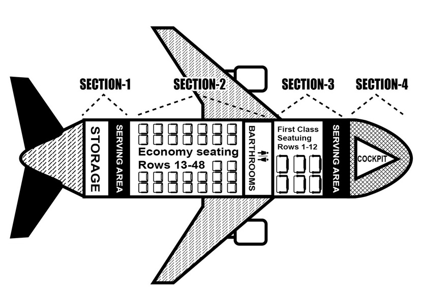

Questions 1 through 3 refer to the following short talk:  00:00 00:00 00:43 |
| Ladies and gentlemen, could we have your attention please? One of our passengers is hurt. He was in the bathroom just now when we were going through turbulence. The movement of the plane caused him to fall over and he has injured his ankle. It looks like quite a bad injury. This is a call for assistance: if anyone on board is a doctor, nurse, or medical student, could you please assist us in treating the injured man? He is in seat 4C towards the front of the plane. If anyone feels they are able to help please come forward now. Thank you for your cooperation and we hope you are enjoying the flight today. 先生女士們，可否請您注意？我們其中一名乘客受傷。剛才當飛機通過亂流時，他在廁所裡。飛機的晃動使他跌倒而導致腳踝受傷。傷口看起來相當嚴重。我們廣播需要有人前往協助，如果機上有醫生、護士、或醫學院學生，請協助我們治療這位受傷的男子？他的座位在機艙前段的4C號。如果任何人覺得您可以幫忙救援，請立刻往前。感謝您的合作，祝您享受今天的飛行。 重要單字及片語 turbulence n. 亂流 injure v. 受傷 ankle n. (腳)踝 medical adj. 醫學的，內科的 forward adv. 向前 cooperation n. 合作，協力 on board 登上(飛機、火車等) Ex. Many passengers on board were waving goodbye to their friends and family on the platform. 許多車上的乘客在和月台上的親友們揮手告別。 |
Questions 4 through 6 refer to the following short talk: 00:00 00:00 00:54 |
| Our final item on today's bulletin is that next month Brian Buckle from our Human Resources department will be running the London Marathon to raise money for sufferers of depression. Brian himself has been a long time sufferer of the condition, and in the past few years has partaken in several fundraising activities, including last year's Mountain Climb for Charity event. If anyone would like to donate money to Brian's cause then donations can be made online at the following web address: www.justgiving.com/brianbuckley, or to Brian in person; he will be setting up shop next to the reception desk every afternoon from 5 o'clock until 5:30 for the next three weeks to collect donations. 今日佈告欄上的最後一個項目是，下個月人力資源部的同仁，Brian Buckle將為憂鬱症患者募款決定參加倫敦馬拉松大賽。Brian本身也是患病多年的患者，而且過去這幾年來，他參加很多募款活動，包含去年的登山公益活動。如果您想要捐錢給Brian的公益活動，您可以在線上捐款www.justgiving.com/brianbuckley，或親自拿給Brian。未來的三個禮拜，每天下午五點至五點半，他會在接待處旁的攤位收集募款。 重要單字及片語 bulletin n. 公告；(學)會報，期刊 human resource n. 人力資源 condition n. 情況，(健康)狀態，條件，病狀 fundraising adj. 籌款，募款 partake v. 分享，分擔，(書)參與，(口)吃喝光 charity n. 慈善 donation n. 捐款，捐贈物品 participant n. 參與者 depression n. 沮喪，(醫)憂鬱症 in person 私下地親自地 Ex. The award winner is required to collect his prize in person. 我們要求得獎者親自來領取獎項。 set up 設立，設置 Ex. Mr. Wang set up his very first trade company when he was 23. 王先生在他23歲那年成立了他的第一間貿易公司。 |
Questions 7 through 9 refer to the following short talk: 00:00 00:00 00:52 |
| Good morning. Thank you for calling Trust Bank Incorporated. Here at Trust Bank Incorporated we are proud to now be serving over one million customers in the UK for both personal and business banking purposes. Please listen carefully to the following options and choose accordingly. For card enquiries and problems press one. For queries about online banking press two. For transactions or to check your account balance press three. To speak to an advisor press four. Please note that in the interest of improving our service, calls may be recorded for quality and training purposes. Also please note that we are currently experiencing a high volume of calls, so your call may be put on hold. 早安。感謝撥打安信銀行。我們很驕傲目前在英國服務的顧客，包括為了個人或商業用戶已經超過一百萬名。請仔細聆聽以下選項，根據說明選擇選項。詢問卡片及相關問題，請按一。詢問網路銀行問題，請按二。詢問交易問題或查詢您的帳戶餘額，請按三。與服務人員通話，請按四。為了改善我們的服務品質及訓練效果，我們將進行錄音。此外，請注意我們目前的來電頻繁，因此我們可能會保留您的來電。 重要單字及片語 purpose n. 目的，意圖 accordingly adv. 相應地，因此 advisor n. 顧問 transaction n. 處置，交易，買賣 enquiries n. 詢問，打聽 option n. 選擇 note v. 注意 improve v. 改善，改進 quality n. 品質 volume n. 量，冊 be proud to+原形動詞/ of+名詞 Ex. In her speech, the Native American mentioned that she was proud to be who she is. 在她演說中，那位美國原住民提及她對自己感到很驕傲。 |
Questions 10 through 12 refer to the following short talk: 00:00 00:00 00:52 |
| Northbound traffic on the M1 is currently backed up for over two miles following an incident which took place at 5:23pm today between junctions 23 and 24 in Leicestershire. A bus collided with a blue Ford Mondeo which led to a pile-up involving seven other vehicles. The road is currently closed between junctions 23 and 24, but police and ambulances are on the scene and normal service is expected to resume around 8:30 this evening. Anyone planning on travelling home on the M1 this evening is advised to seek an alternative route. Eight people have been taken to hospital to receive treatment for minor injuries as a result of the collision, however there are no reported fatalities. 由於今天下午五點二十三分在Leicestershire23英哩與24英哩處發生車禍，M1往北目前的交通塞車超過兩英哩。有輛公車撞上一台藍色福特Mondeo的相撞，導致其他七部連環車禍。23英哩與24英哩的交接處目前已封閉，警車與救護車都已抵達現場。預計約今天晚上八點半才會恢復運作。任何回家必須經過M1道路的民眾，我們建議您走替代道路。因這次撞擊受輕傷的八位患者，皆已送往醫院治療，但目前尚未獲得有關造成傷亡的消息。 重要單字及片語 incident n. 事件，插曲 junction n. 連接處 ambulance n. 救護車 involve v. 牽涉，連累，使專注 normal adj. 普通的，一般的 alternative adj. 有選擇性的，替代的 /n. 選擇 route n. 路線，航線，途徑 treatment n. 醫療 collision n. 相撞 fatality n. (意外)死亡，(疾病)致命 back up 後退存檔 Ex. In order to drive out of the parking space, the vehicle behind him has to back up at least ten inches. 為了能將車移出停車格，他後方的那輛要倒退至少10吋。 lead to 導致 = bring about = cause Ex. The continuous rain in the past week has led to a huge flood in the city. 過去一個星期的連日降雨造成城市大淹水。 |
Questions 13 through 15 refer to the following short talk: 00:00 00:00 00:49 |
| Before we start today's meeting I have a short announcement to make about Greg Bust from our IT department. Greg was playing football last night as he does every Tuesday. Not long into the game he collided with two other players and his leg was broken in two places. The other players got an ambulance there as quickly as they could and Greg was taken to hospital to be operated on. In time he should be able to make a full recovery, however there will be more operations and physical therapy in store for him over the coming months, and his road to recovery is going to be a long one. He's currently recovering at Manchester Royal Hospital and I'm sure he would appreciate visitors if anyone can spare the time. 會議開始之前，我要宣布一件資訊部門的同仁Greg Bust的相關消息。昨日，Greg照慣例每個禮拜二晚上去打橄欖球。比賽進行不久後，他與其他兩位球員相撞，造成腿部兩處斷裂。其他球員馬上叫救護車，在最短的時間內將Greg送到醫院進行手術。因為即時處理他應該可以完全復原。然而，在未來的幾個月，他還要動手術以及進行物理治療，復原將會是一場漫長的路。目前，他正在曼徹斯特皇家醫院休養，我相信若有人可以撥空去探病，他一定會很感激。 重要單字及片語 announcement n. 宣告，通知 ambulance n. 救護車 operate v. 運作，營運，操作，動手術 operation n. 手術 therapy n. 治療，療癒，療法 recovery v. 恢復，(健康)康復 appreciate v. 感激，欣賞， spare v. 騰出(時間，人手) ，分讓(多餘的東西) collide with 碰撞，抵觸 Ex. The big vessel collided with another ship operating on the river. 那艘大船撞上另一艘在河上作業的船隻。 |
Questions 16 through 18 refer to the following short talk: 00:00 00:00 00:46 |
| Coming to ABC this October: Dangerous Looks, a chilling new drama set in Victorian England in the heart of the Norfolk countryside. The drama follows the lives of an unhappily married couple, John and Jane Westwick. The Westwicks, bored with their lives and with each other, take in a strange visitor, who stumbled onto their property one evening after getting lost in a sudden rainstorm. This first season of the drama was aired on BBC Television in the United Kingdom in the spring of this year and received great reviews from several major critics. A second season has already been commissioned for next summer. 十月份即將在ABC頻道上映的：危險的臉孔，是一部以英國維多利亞時期為背景的恐怖劇情，其拍攝地點是紐福客鄉間的中心地點。本劇情是關於一對婚姻不和的夫婦，John 與Jane Westwick。Westwick夫婦一起生活很厭倦，某天晚上一位因臨時下大雷雨而迷路的陌生人闖進他們家裡。今年春天，第一季已在英國的BBC電視台上映，且獲得一些知名評論家的優良評論。第二季已籌畫於明年夏天開拍。 重要單字及片語 chilling adj. 令人恐懼的 drama n. 戲劇 set n. (電影)場景，(舞台)布景，一套/部/副 stumble v. 絆倒，結結巴巴，步入歧途 property n. 財產 United Kingdom n. 大英國協，英國 commission v. 委託，任命 air v. 廣播，播送，使通風，晾 popularity n. 普及，流行，受歡迎 be married to 與…結婚 Ex. After being together for more than ten years, my cousin is finally got married to her boyfriend. for that sentence we say "get married to". "be married to" must be a present tense sentence. Ex: My cousin is married to the most beautiful girl I have ever seen. 在一起超過十年了，我表哥妹終於要和一個我見過最美的女孩她的男友結婚。 be about to 即將 Ex. The inbound train is about to depart on Platform 7. 往市區的火車將在七號月台出發。 |
Questions 19 through 21 refer to the following short talk: 00:00 00:00 00:48 |
| Ladies and Gentlemen, I hope you're enjoying your day so far watching your kids here at North Warwickshire Primary School for our 2013 annual school Sports Day. So far we've seen little Jonny Grimley take first place in the boys under 8's 40-metre running race, and Daisy Thornbrook is currently in the lead of the girls under 10's long jump event, earlier recording a distance of 2.63 metres. Well done to both of them! We've now reached our first intermission, so any minute now we're going to be joined on the field by the North Warwickshire High School marching band for this morning's entertainment, so make sure you stick around for that. As always, refreshments are being served in the school's reception area. 各位先生女士，我希望您到目前還喜歡這一天看著您的孩子參加北霍威奇夏爾國小的2013學年度的校園運動會。截至目前為止，我們可以看到8歲以下的男生組40公尺短跑比賽中，Jonny Grimley領先。Daisy Thornbrook目前則在10歲以下女生組跳遠比賽項目領先，稍早時紀錄的距離為2.63公尺。兩位都表現的很棒！ 我們目前是第一次的中場休息。這段時間大家可以到操場觀賞北霍威奇夏爾高中樂隊的早場表演。因此，請確保你前往參觀。一如既往，學校接待處也備妥點心已供民眾享用。 重要單字及片語 primary adj. 主要的，基本的，初等的 annual adj. 一年一度的 intermission n. 間歇，暫停，中斷 marching n. 行進的 entertainment n. 娛樂 refreshments n. 小點心 reception n. 接待，接待會 scout n. 球探，星探 |
Questions 22 through 24 refer to the following short talk: 00:00 00:00 00:48 |
| Hello. You have reached the voicemail of Jean Granville, head translator at Jean Granville Translations. I will be away on vacation from Monday, February 15th to Saturday, February 20th. If you need to get in touch with me during this time you can either send me an email at jean@jeangranvilletrans.com, and I will reply when I am back at work; alternatively, my son Harry can be reached at the following number: 07835628351. Harry is my acting secretary and will be handling all my business matters while I am away. Many thanks for your call. 哈囉，這是Jean Granville 的答錄機，我是珍格威爾翻譯社的社長。2月15日星期一至2月20日星期六，我在度假期間。如果你想與我聯絡，你可以寄電子郵件到jean@jeangranvilletrans.com，回來上班後，我會回覆您。或者，您可以打電話給我兒子Harry，電話號碼是07835628351。Harry是我的秘書且我不在這段期間他會協助處理所有生意。感謝您的來電。 重要單字及片語 reach v. 達到，伸手可及 translator n. 翻譯人員 reply v. (+to) 回覆，回答，回應 alternatively adv. 替代性地，有選擇性地 illegal adj. 非法的 get in touch with 和…聯繫上 Ex. The secretary will have to get in touch with the designer to make another appointment for the consultation. 秘書要和設計師聯繫再約個會議時間。 |
Questions 25 through 27 refer to the following short talk:
00:00 00:00 00:44 |
|
| Okay, everyone, that's the end of my show this evening. Tune in again tomorrow for more of Jimmy Basset's eighties classics. I've got just enough time to remind you all to come down to the Stockbridge Town Fair this Saturday, and make sure you bring your families with you because there's going to be something for everyone. We'll have clowns and amusement park rides for the kids, some live music towards the evening for the parents, we'll be judging the final round of this year's Stockbridge Vegetable of the Year competition, and of course the main event: you'll be able to see me, Jimmy Basset, riding an elephant! It's sure to be a great day, so don't miss it! I hope to see you there Saturday. Bye for now. 大家好，今天晚上的節目已進入尾聲。明天請準時收聽更多關於Jimmy Basset 八零經典節目。我還有時間邀請大家參加這個禮拜六在史塔克橋旁舉行的市集活動。請要帶家人前來，因為那裡將會有很多娛樂節目。我們會有適宜小孩的小丑表演以及遊樂園。晚間有為了父母舉辦的現場音樂表演。我們也將會針對史塔克橋的年度蔬菜大賽進行最後的評審。當然，最重要的是，你將會看到我本人，Jimmy Basset，騎著大象！當天一定很好玩，千萬別錯過。希望禮拜六可以在那裡見到大家。再見！
重要單字及片語 remind v. (of+N) 提醒 amusement n. 娛樂 towards prep. 朝向… competition n. 競爭，比賽 round n. 一輪，(酒)一巡，一回合 main adj. 主要的 tune in 收聽，收看某一節目 Ex. Please tune in to the PPS World News at the same time tomorrow! 請在明天同一時間收看PPS世界新聞！ |
Questions 28 through 30 refer to the following short talk: 00:00 00:00 00:49 |
| We are interrupting this evening's programming to bring you a special news bulletin: Good evening everyone, sorry to interrupt your television viewing, but we have just received a report indicating that a category 2 hurricane has formed over the Atlantic Ocean just off the east coast of the United States. The storm is slowly making its way towards the shore now and is expected to hit Richmond in the early hours of the morning. We advise you to stay indoors this evening, and make sure all your doors and windows are secured. The storm should have passed by tomorrow afternoon, however in the morning we may still be experiencing strong winds. Thank you for your attention, and now back to this evening's programming. 我們即將插播一則晚間特別新聞：大家晚安，抱歉打擾您收看電視，我們剛收到消息，二級龍捲風已經在美國東海岸的大西洋形成。龍捲風正緩慢地向岸邊移動，預計將在凌晨時間襲擊瑞奇蒙。我們建議大家今天晚上待在室內，並確保所有的門窗已上鎖。龍捲風預計應於明日下午經過，但早上的風速依然強勁。感謝您的收看，現在我們回到晚間新聞。 重要單字及片語 interrupt v. 中斷(講話)，打擾 bulletin n. 公告，(學)會報，期刊 indicate v. 指示，象徵 hurricane n. 颶風 category n. 種類 secure v. 使安全，關緊，拘留 broadcast v. 播出，廣播 |